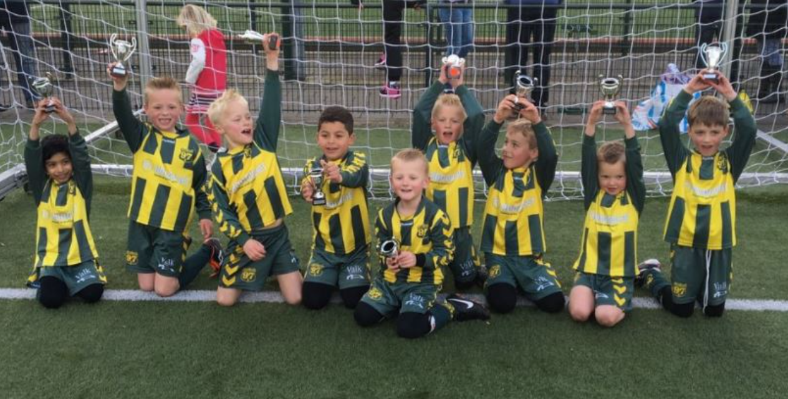

Ik ben Niek van Veen en ik ben 16 jaar oud. Ik ben geboren op 10-11-2009. 
Ik woon in Voorschoten met mijn familie die bestaat uit mijn broer, zus, vader en moeder.
Mijn hobby`s zijn voetballen en gamen, maar ik ga natuurlijk ook graag naar buiten met vrienden.
Ik speel bij voetbal op een best hoog niveau bij Voorschoten 97. Ik zat vroeger op basisschool Gevers Deyenoot.
Ik vind het leuk om voetbal te kijken en ik ben voor de club Feyenoord
Ik heb dit vak gekozen, omdat ik het best interssant vind en er graag in wil verdiepen. Nu ik er mee
bezig ben vind ik het leuk, maar vooral moeilijk.
(klik op het rechterste plaatje voor een filmpje)